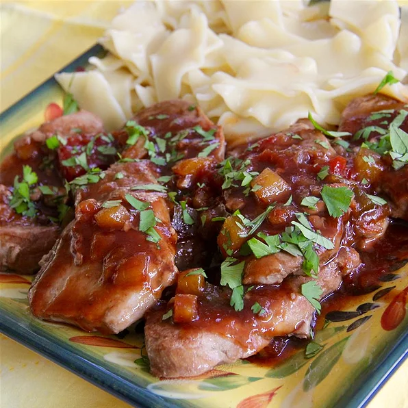

Spicy-Sweet Pork Tenderloin

Description
Add some veggies and serve over rice for a mock stir-fry.
Ingredients
- 1 tablespoon soy sauce
- 1 teaspoon minced fresh ginger root
- 1 teaspoon minced garlic
- 1 teaspoon olive oil
- 1 pound pork tenderloin, cut into 3/4-inch slices
- ⅓ cup salsa
- 1 tablespoon seedless raspberry preserves
- 2 tablespoons chopped fresh cilantro (Optional)
Steps
- Mix soy sauce, ginger, and garlic in a small bowl.
- Heat oil in a large nonstick skillet over medium-high heat.
- Arrange pork slices in a single layer in the skillet.
- Spoon soy sauce mixture over the pork.
- Cook pork until completely browned and just slightly pink in the center, about 3 minutes per side.
- An instant-read thermometer inserted into the center should read at least 145 degrees F (63 degrees C).
- Remove pork to a plate, retaining juices in the skillet.
- Stir salsa and raspberry preserves into the drippings in the skillet.
- Cook and stir until slightly thickened, about 30 seconds.
- Spoon sauce over pork slices and top with cilantro.